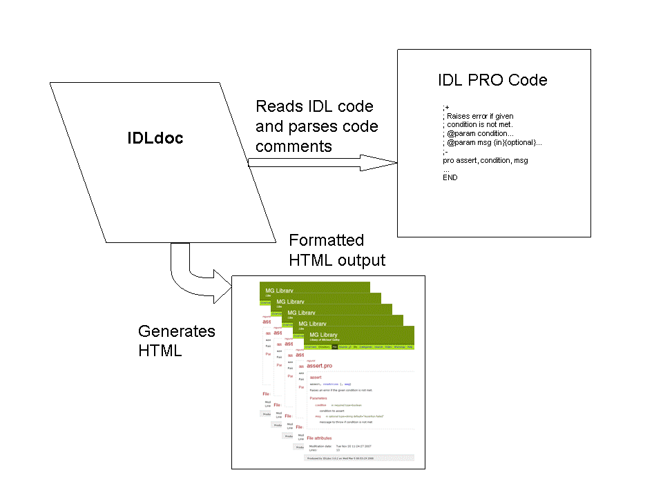
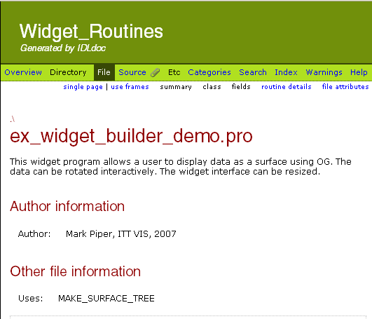

Michael Galloy developed
IDLdoc to generate Javadoc-style HTML documents from comments in IDL
.pro
code.
Galloy
(
http://michaelgalloy.com
) provides the code for IDLdoc as well as the documentation for using it.
Some developers who build IDL applications distribute IDLdoc-generated documentation to end users. Others use IDLdoc to comment their code so that other developers can quickly scan the comments for what they need.
If you have commented your code using the IDLdoc style, you can run the IDLdoc command within IDL to generate HTML pages containing your comments and other information about the file or routine(s).

You can download the IDLdoc application as a .zip archive and install it manually. (The .zip archive is compatible with Windows and UNIX systems.)
Download the IDLdoc package from http://idldoc.idldev.com/wiki/Downloads . The download is a .zip file. Extract the files to a folder that is located in IDL’s path (defined by the !PATH system variable).
After IDLdoc is installed, run the IDLdoc routine from the IDL command line to generate HTML documentation from your IDLdoc code comments. The most basic IDLdoc command looks like:
IDLDOC, root=' code_directory ', output=' output_directory '
where code_directory is the directory that contains the .pro code and output_directory contains the output HTML.
IDLdoc also has many keywords that affect the generated output. For example, the keyword TITLE sets the string you want to display at the top of each generated page in the HTML output.
Note: Learn more about how to use the IDLdoc routine at Michael Galloy’s IDLdoc development site: http://idldoc.idldev.com/wiki/GettingStarted .
When the HTML is generated, file comment information resides at the top of the HTML page, and the routines are each documented on the same page, with links to each routine at the top of the page.
When you generate the HTML code from IDLdoc, the results look like the following:

HTML output of IDLdoc comments